El cuidado que tu mascota merece, en un entorno de paz y elegancia.
Descubre un espacio donde la estética canina se convierte en una experiencia premium. Mimamos cada detalle para el bienestar de tu mejor amigo.
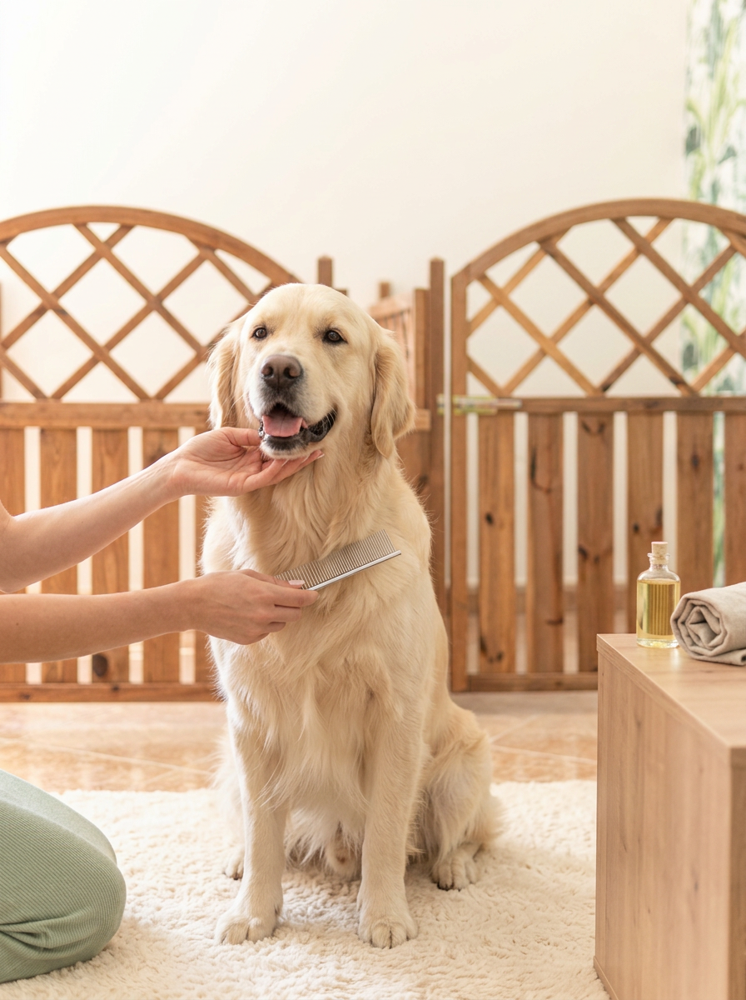
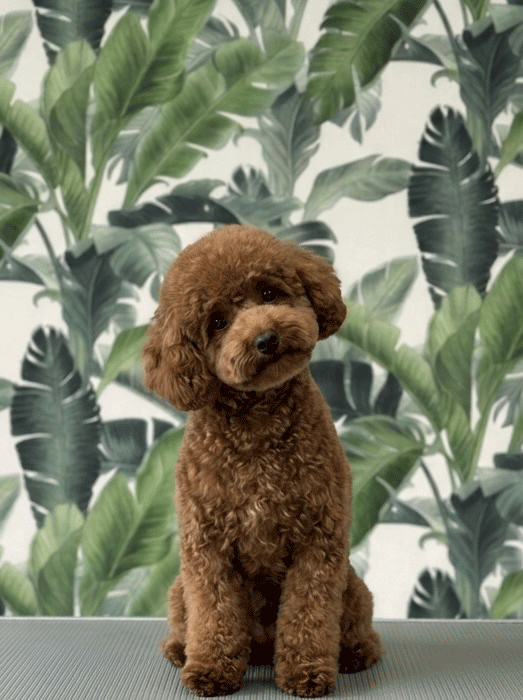
¿Qué es Le Petit Can?
No somos una peluquería convencional. Hemos creado un refugio de belleza para tu mascota, fusionando la técnica más refinada con un trato excepcionalmente delicado. Alejados de ambientes clínicos o masificados, ofrecemos una experiencia tranquila y personalizada.
-
Cuidado Delicado
Tiempos de servicio adaptados para no estresar al animal. Sin prisas ni agobios.
-
Cosmética Premium
Productos naturales hidratantes y respetuosos con su piel y manto capilar.
-
Ambiente Boutique
Un espacio hermoso, higienizado y relajante, pensado exclusivamente para su confort.
Alta Estética Canina: El Arte de Iliana Ortega
Detrás de Le Petit Can está Lili Ortega, una apasionada del bienestar animal que ha hecho de la estética su lenguaje. Su visión es sencilla: cada perro merece ser tratado con paciencia, amor y profesionalidad. Adaptamos nuestros tiempos al temperamento de cada peludo, garantizando una experiencia relajada y 100% personalizada.
Formada en alta peluquería y experta en dermatología del manto, Iliana combina el arte del grooming con un respeto profundo por la salud. En nuestra boutique, cada sesión emplea cosmética de gama alta para realzar la belleza natural de tu compañero, cuidando tanto su aspecto físico como su equilibrio emocional en un entorno de calma absoluta.
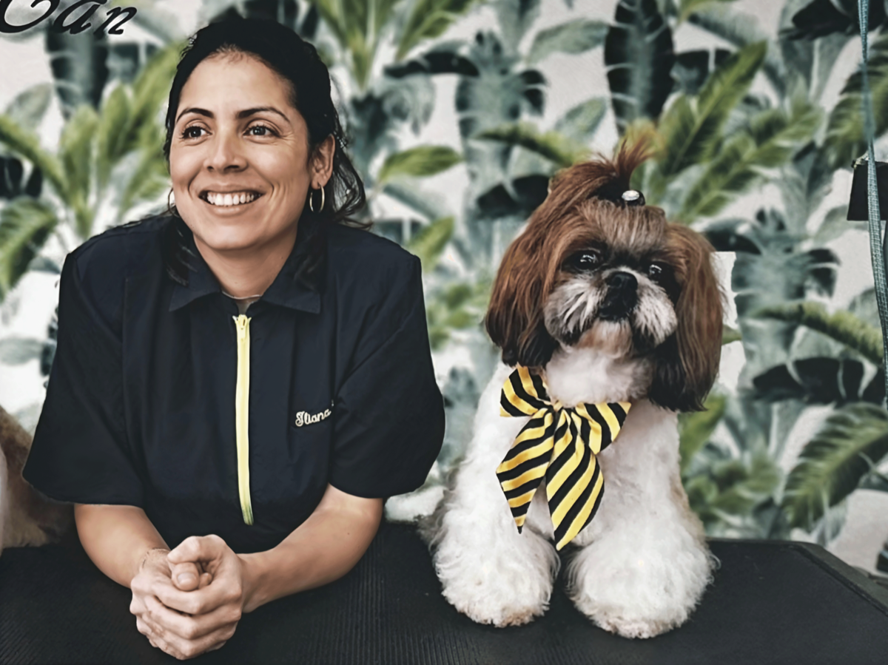
Servicios, de lo esencial a lo extraordinario
Cuidamos de tu mascota por dentro y por fuera. Ofrecemos mucho más que un buen corte: higiene, estética, salud física y equilibrio emocional, todo en un solo lugar. Desde los servicios esenciales —baño, cepillado y corte de raza— hasta tratamientos especializados para mejorar su bienestar general.
PIDE TU CITAFamilias Felices
"La atención es excelente, a mí perrita Diva la dejan guapísima y a pesar de llevarla con nudos hacen todo lo que pueden por salvarle el pelo, la dejan como a un osito y aguanta mucho el look. Destacar que le dedican tiempo al trabajo, no van con prisas como en otros sitios"
"Acabó de ir a esta nueva peluquería canina en Narón y solo puedo hablar maravillas de esta chica, una gran profesional, muy cuidadosa con los perros y se ve que sabe lo que hace. Mi perrete salió encantado de la pelu y yo super contento"
Boutique Le Petit Can
Una cuidada selección de cosmética y herramientas profesionales para que el cuidado de Le Petit Can continúe en casa.
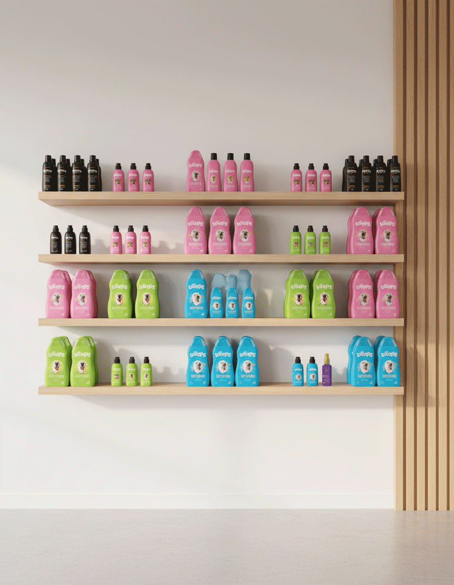
Línea Spa: Pack Completo
Champús, acondicionadores y perfumes de alta gama
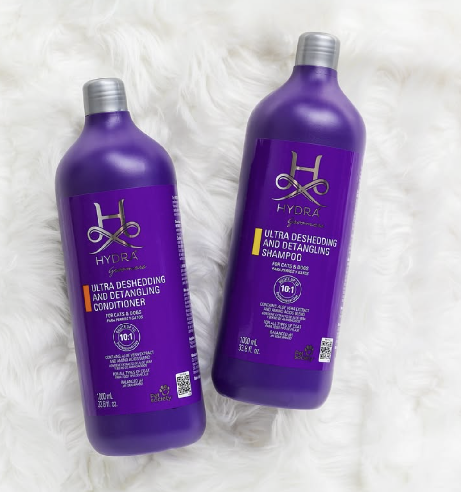
Línea Hydra: Champú & Acondicionador
Hidratación profunda y brillo intenso
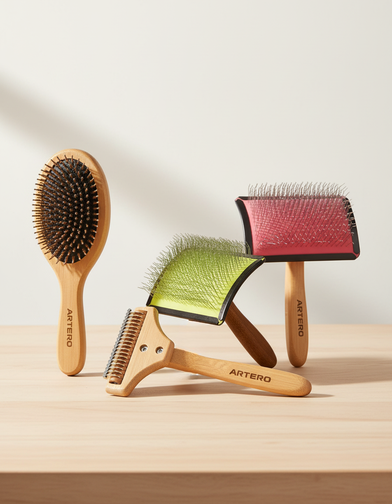
Grooming Pro: Peines y Cardas
Herramientas de alta gama para un acabado perfecto
Preguntas Frecuentes
Por lo general recomendamos que los dueños no estén presentes en la sala de corte para que el perrito no se ponga ansioso ni intente saltar hacia su guía. Nos ayuda a concentrarnos en él y asegurar que disfrute la sesión. ¡Pero no te preocupes! Siempre te avisaremos a tiempo para la recogida.
Utilizamos exclusivamente cosmética canina de gama alta, formulada con ingredientes naturales, libre de siliconas duras y respetuosa con el pH de su piel para evitar irritaciones. Apostamos por marcas premium cruelty-free.
Sí, aplicamos un suplemento por comportamiento cuando es necesario dedicar más tiempo y manejo específico para que la experiencia sea segura y lo más tranquila posible para el perro.
Nuestro centro está especializado y equipado principalmente para razas pequeñas y medianas. No obstante, para casos de razas grandes, realizamos una valoración previa personalizada para asegurar que podemos ofrecerles el mejor servicio y comodidad. ¡Consúltanos tu caso sin compromiso!
Nuestro Salón
Un vistazo a nuestro rincón de bienestar y a los peludos que confían en nosotros. Síguenos en @lepetitcan.naron
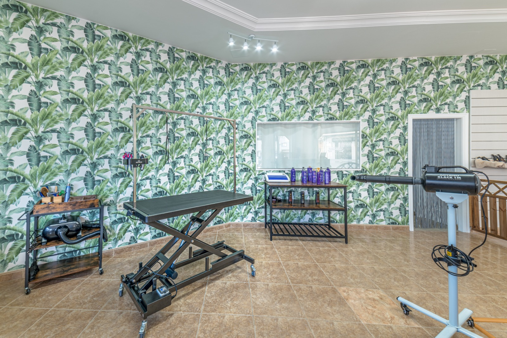
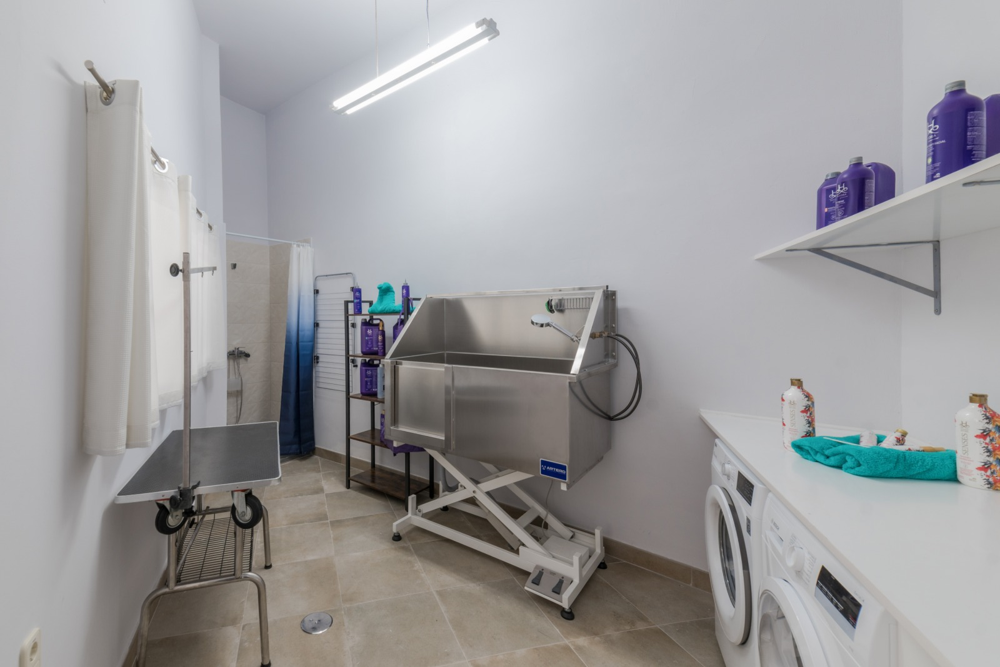
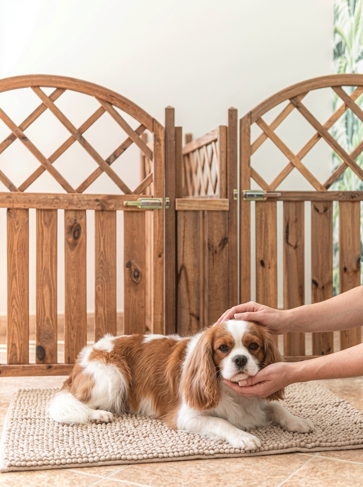
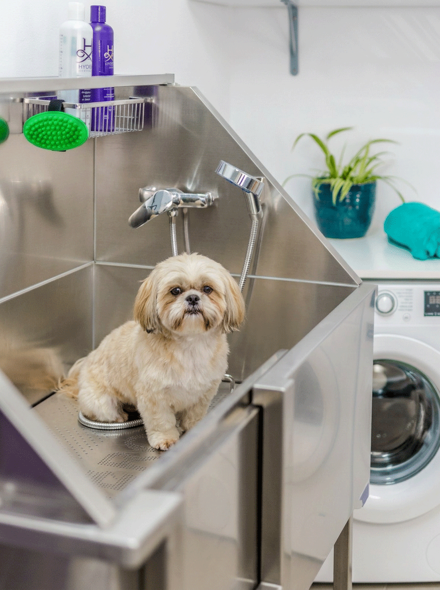
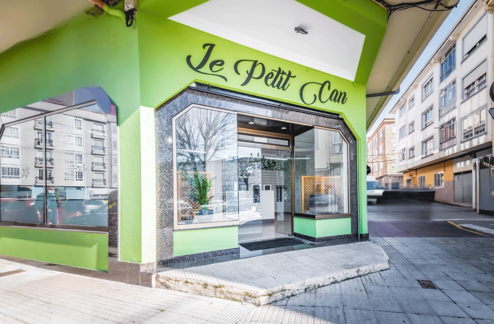
Encuéntranos en Narón
Un rincón creado para la calma y el mimo de tu animal.
Nuestra Boutique
Rúa Francisco Pizarro, 11
15570 Narón, A Coruña
Horario de Atención
Lunes a Viernes: 09:30h - 16:00h
Sábados, Domingos y Festivos:
Descanso
Reserva su Momento
Escríbenos para consultar nuestra disponibilidad de agenda. Estaremos encantados de atender a tu mascota.